This document provides a comprehensive technical overview of the Signal trading system, an enterprise-grade AI-driven cryptocurrency trading platform. The system combines multi-timeframe technical analysis, agent swarm AI consultation, and automated trading execution into a scalable, maintainable architecture.
The Signal system is designed for professional cryptocurrency trading with three core capabilities: automated signal generation through AI analysis, multi-agent consultation for manual trading decisions, and comprehensive risk management. For detailed information about specific AI decision-making components, see AI Trading Engine. For agent system implementation details, see Agent Swarm System. For configuration and deployment guidance, see Configuration and Deployment.
The Signal trading system implements a service-oriented architecture with clear separation between AI decision-making, mathematical analysis, user interfaces, and trading execution.

The system implements a three-stage AI decision pipeline that processes market data through specialized mathematical services and produces trading decisions with complete audit trails.

The agent swarm system provides intelligent consultation capabilities through specialized cryptocurrency agents that share common technical analysis tools.

The system employs six specialized mathematical services, each optimized for specific timeframes and trading strategies:
| Service | Timeframe | Candles | Indicators | Specialization |
|---|---|---|---|---|
ShortTermMathService |
15min | 144 (36h) | RSI(9), MACD(8,21,5), Bollinger(10,2.0) | Scalping optimization |
SwingTermMathService |
30min | 96 (48h) | RSI(14), MACD(12,26,9), Bollinger(20,2) | Swing trading |
LongTermMathService |
1h | 48 (48h) | RSI(14), MACD(12,26,9), SMA(50), ADX(14) | Position trading |
VolumeDataMathService |
1h | 220/96 | Pivot Points, Volume spikes (1.5x+) | Support/Resistance |
SlopeDataMathService |
1min | 120 (2h) | VWAP, Price Slope, Momentum(10) | Micro-trend analysis |
WhaleDetectionMathService |
5min | 72 (6h) | Volume anomalies, OBV analysis | Institutional detection |
The system implements a sophisticated feature flag architecture with bidirectional UI-to-backend mapping through SettingsConnectionService:
isSignalStrengthMinimal through isSignalStrengthMaximalThe system supports dynamic AI model selection through InferenceMetaService with three provider categories:
openai/gpt-oss-120b, DeepSeek-R1, DeepSeek-V3grok-3, grok-3-minigpt-oss:120b, deepseek-r1:671b, deepseek-v3:671bAll completion types (RunnerCompletion, RunnerStreamCompletion, RunnerOutlineCompletion) use unified provider selection logic.
The system generates comprehensive trading datasets capturing complete decision pipelines from input analysis through AI reasoning to market execution results. Each trading decision creates a BacktestEventRow with:
resultId linking to full LLM interaction logsThe Signal trading system represents a convergence of enterprise software architecture principles with cutting-edge AI technology, designed for professional cryptocurrency trading operations requiring both automated execution and human-assisted decision making.